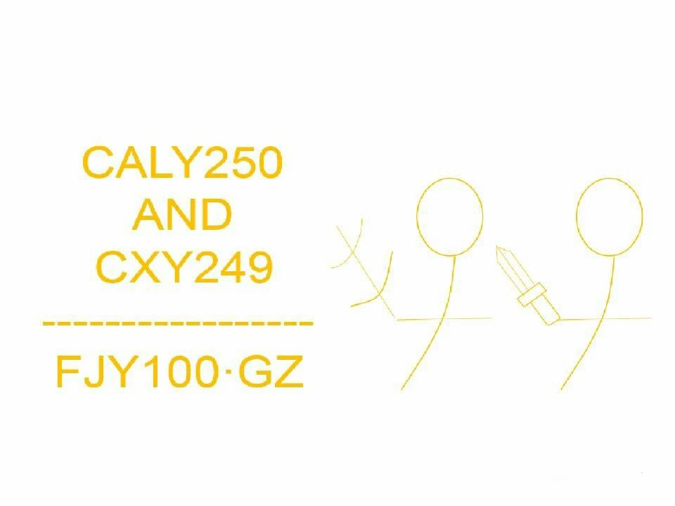

欢迎光临office team官网（2016年创建）
一个连基地也没有的伪工作室，建立于2016年初，本是一个做盗版游戏的工作室，最初盗版代表作有：《逗比危机》（因后期二次被盗版，宣布关闭服务器，对方因管理不善，一周后倒闭……）《超级马里奥制造》（因后期无新关卡，默默淡出人们视线）,后来，在偶然的一次发现，我们有了自己的第一个原创游戏！！《选择的大冒险》（本地版游戏），引来了无数人们前来游玩，因此我们又有了可更多的新成员，这时，工作室改名，改为“caly250andcxy249/fjy100”工作室，简称“office工作室”，经过漫长的岁月，我们现在已有微信公众号（吃瓜队长 caly250andcxy249）网站（caly250andcxy249.sxl.cn）官方日记类漫画《工作室里的那点事》（在网易漫画上），希望工作室能越走越远，再创辉煌！！
